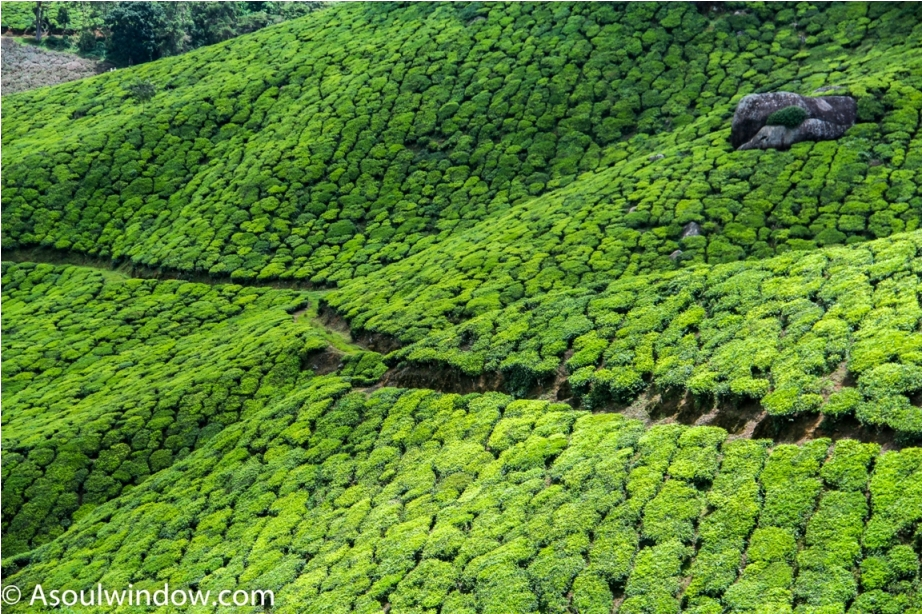
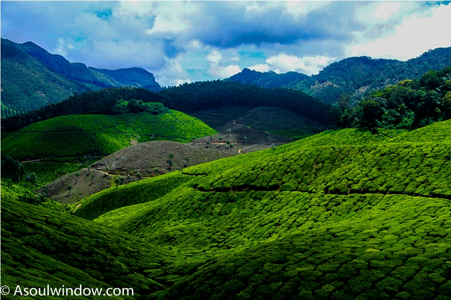
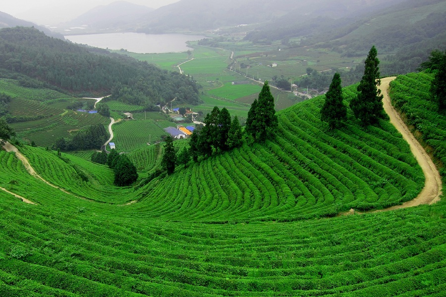
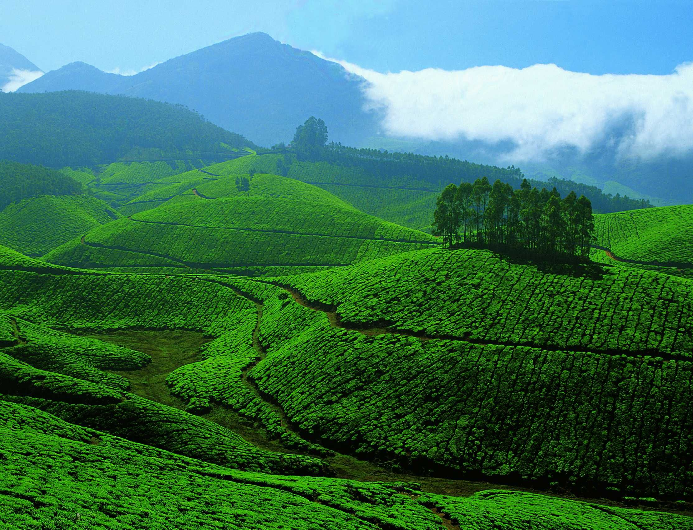
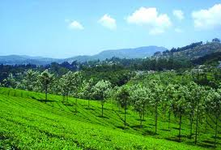

Kerala is a magnificent destination with gorgeous landscape. Its terrain and weather have made it a haven for tea cultivation in India. These plantations are strewn across the state and offer picturesque views and unending cups of tea, making them one of the must-visit tourist places in Kerala during your family holiday.
Here are five beautiful tea plantations in Kerala that are must-do
- olukkumalai Tea Plantation, Idukki
When you are here, you have the pleasure of sipping your tea at the highest plantation in the world! It offers stunning views of the Munnar valley below and is a trekker’s paradise. During the rains, it has a heavenly aura and the kids can learn about the crush-tear-curl method at its tea factory. Make it a point to taste the sample teas here and take home the Broken Orange Pekoe blend as a souvenir!

- Kannan Devan Hills Plantation, Munnar
When you head to this region, it is imperative to visit a tea plantation, as these are must-see places to visit in Munnar. Given to John Daniel Munroe on lease in 1877, today these are sprawling plantations. Its highlight is the manicured tea garden as well as amazing biodiversity. This plantation also houses the country’s first tea museum that is sure to excite your kids. When you visit this destination, make sure to check into Club Mahindra Munnar Resort with your family.

- Elstone Tea Estate, Wayanad
Located in the lush landscape of Wayanad, this property is known for its dense carpet of tea plants. Come here to enjoy the sloping hills of the Western Ghats and the diverse flora and fauna of the land.

- Chinnakanal Tea Fields
These are located close to Munnar but are away from the touristic din. They are very beautiful and are perfect for families who want to be away from the crowds. Go on a blissful jeep tour through these fields and make sure to click many photographs while you are here. Try making it in time for the sunrise here and you will be happy you woke up early!

- Bonakkad, Thiruvananthapuram
Located at a height of 1100 meters above sea level, Ponmudi is a stunning hill station and a base for hikers and trekkers who go higher up in the mountains. Bonakkad is a famous tea estate near this place. You will be enjoying lots of tea here while your kids will be enchanted by the Bona and Vazuvanchola Waterfalls here!
